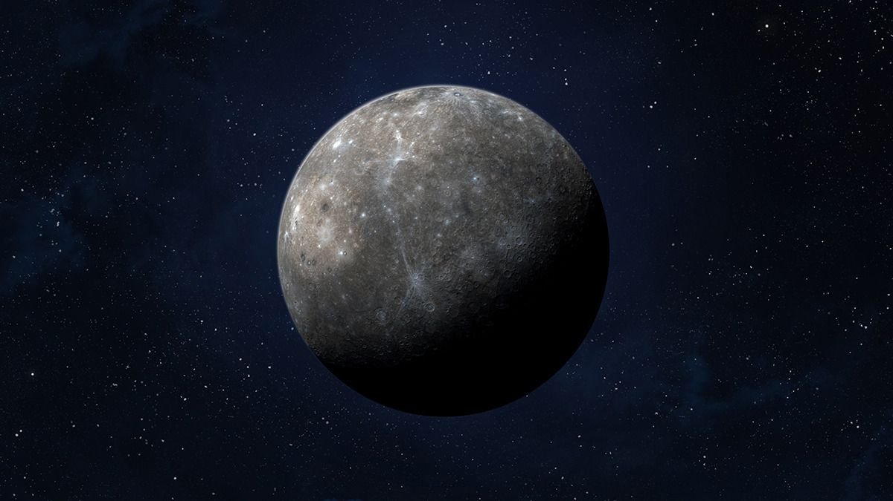

Infovon der Sonne: 58.000.000 kmRadius: 2.439,7 km Umlaufzeit: 88 Tage Masse: 3,285 × 10^23 kg (0,055 M⊕) Oberfläche: 74.800.000 km² Gravitation: 3,7 m/s² |
 |
| Der Merkur ist mit einem Durchmesser von knapp 4880 Kilometern der kleinste, mit einer durchschnittlichen Sonnenentfernung von etwa 58 Millionen Kilometern der sonnennächste und somit auch schnellste Planet im Sonnensystem. Wikipedia |
|